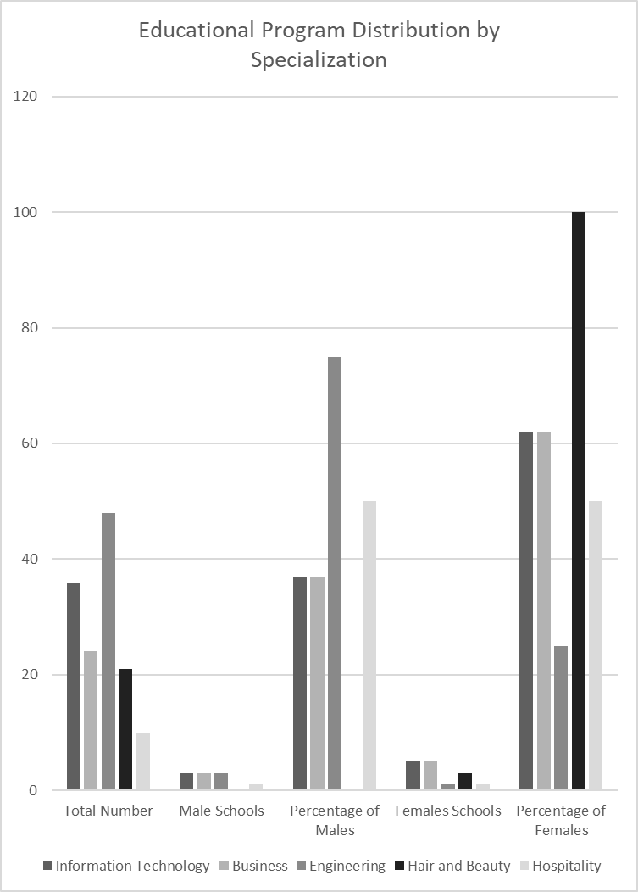

Statistics of Educational Program Distribution by Specialization

- Statistics of Educational Program Distribution by Specialization
The table presents statistics on the distribution of educational programs between genders across different schools. The total number of students in the Information Technology program is 36, with 3 male schools and 5 female schools, reflecting a male percentage of 3700% and a female percentage of 6200%. In the Business program, there are 24 students, with the same number of schools for both males and females, indicating a balanced enrollment.
The Engineering program leads in total student numbers with 48, but features a male percentage of 7500% compared to just one female school. On the other hand, the Hair and Beauty program has no male schools, while female students achieve a notable percentage of 10000% across 3 schools. Finally, the Hospitality program includes 10 students, with one school each for males and females, indicating a balanced ratio between genders.
The team collected this data from BTEC EMIS-vocational Dept, and it pertains only to Zarqa Governorate
Additional related data
Total number of students for the academic year 2024/2025 - All schools
Level 2 : 1102 Level 3 : 1048
Total number of teachers in the technical program
153 Females - 71 Males - 81
Total number of technical schools
10 Female - 8 Male - 8
The team collected this data from BTEC EMIS-vocational Dept, and it pertains only to Zarqa Governorate